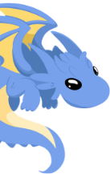
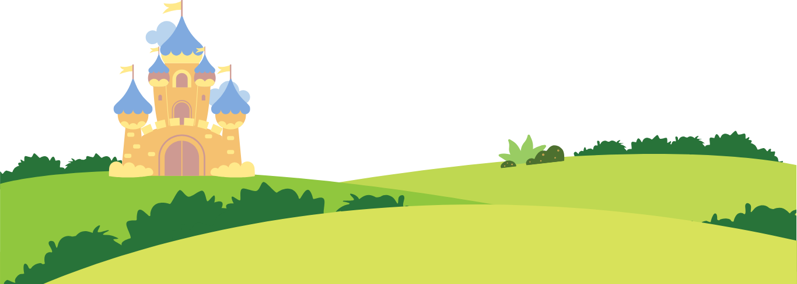

Dentro do jogo podemos observar um dragão ansioso e nervoso que sente uma grande necessidade de expelir fogo pela sua boca como um hábito natural da sua espécie, porém tem medo de acabar se excedendo e queimar todo o castelo e o reino, mas tudo o faz acreditar que não pode mais lidar com isso. No jogo, a criança assume um papel muito importante em se comunicar corretamente com a criatura e entender o seu problema assim podendo ajudá-lo.
Como Jogar: A interação do jogo irá começar com o usuário guiando a criatura enquanto ele respira profundamente para se acalmar, moderando a inspiração e expiração do ser através do pressionamento de teclas, que após a conclusão da ação demonstrará confiança, satisfação e gratidão terminando o jogo com a missão cumprida. O objetivo é ajudar as crianças a lidarem com suas próprias ansiedades, regulando as emoções usando a respiração como uma forma de auto-relaxamento, ajudando o corpo e a mente a se acalmarem.
